Welcome to the guide for building dynamic API-driven templates using the YATCO Connect plugin and WordPress.
When Builder loads in the browser, it typically has three primary panels:
Layout: Contains draggable blocks (Container, Row, Column, Two Columns, Three Columns, Grid, Card and Sticky Div) that users can drag into the canvas to build templates.
Basic: Contains draggable blocks (Text, Link, Charter contact button, Vessel leads button and Image) that users can drag into the Layout components for a structured output.
Icons: Contains draggable blocks (Icon, B-Icon, Png Icon and SVG Icon) that users can drag into the Layout components.
Icon: Set of predefined Font Awesome Icons
B-Icon: Set of predefined Bootstrap 5 Icons
PNG Icons: There is a set of predefined icons as well as user can use the option to upload the buttons from Traits tab.
SVG Icons: There is a set of predefined icons as well as user can use the option to upload the buttons from Traits tab.
Dynamic: Contains draggable blocks (Variable, Slider, Slider 2, Gallery, Video and Contact Form) that users can drag into the Layout components. These blocks will be replaced by the actual Api data available.
Charter: Contains draggable blocks (Amenities, Staterooms, Toys &Tender and Rates) that users can drag into the Layout components. These blocks are dedicated for charter single page.
This panel is context-sensitive and displays options based on the selected component.
Select an element and change its Background Color to blue or Font Size to 20px.
For a button, you might see a Link field where you can set the URL it should navigate to.
Drag a Card block into the editor and adjust its size properties.
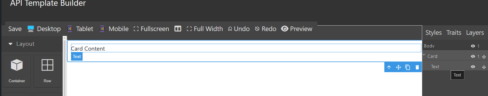Adjust the max width and min height
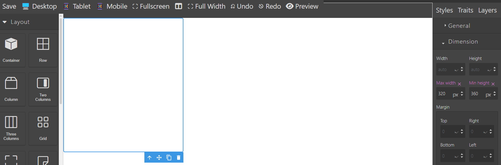Delete the default dummy blocks if not needed
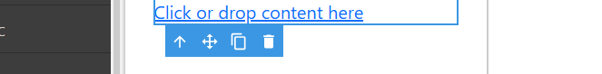Place a Link block inside the Card block...
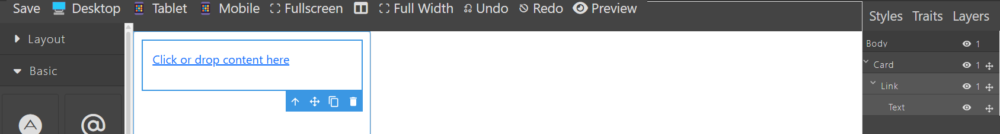Give URL for the link which is in the Traits tab in the right panel.
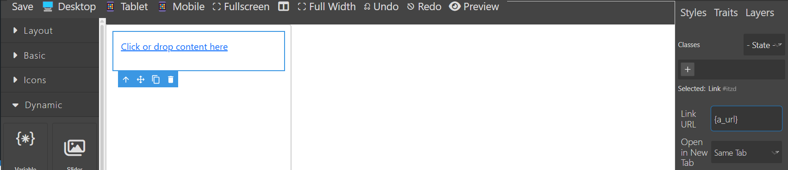Drag an Image block inside the Link block. There is no option to edit the image source as it is just a placeholder that replaces the Yacht main photo..
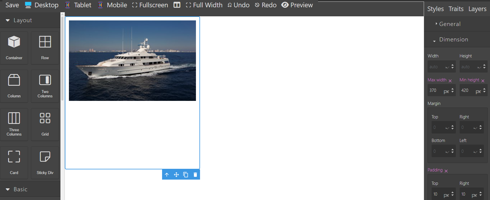To display overlay for the Image, Go to right panel 'Layers' and select the 'Image', then click 'traits'. Now tick mark 'Show overlay' checkbox.
 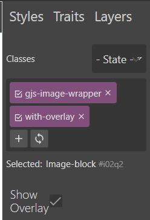
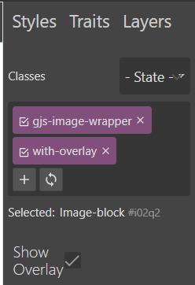
If you want this Image to zoom on mouse over the card then, Select the card layer and then select traits tab in the rigth panel. Select the checkboc 'Image had effects'

Add a Column block and then a Three Column block...
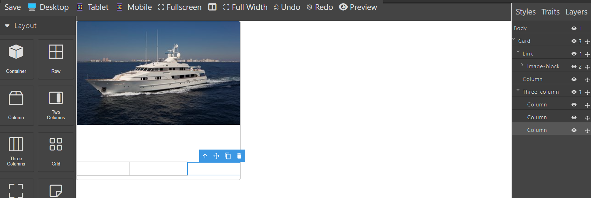Drag a Variable block, configure it and style it...
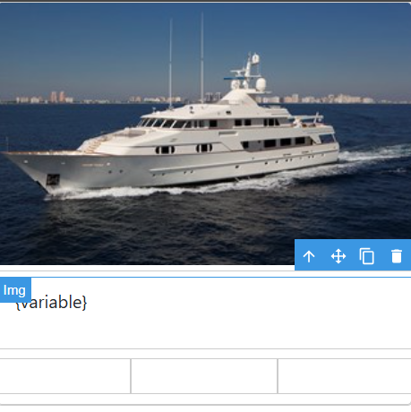Click the Variable in the editor, click on the pencil icon in the toolbar...
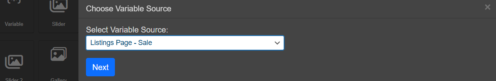A popup will appear to select the type of page you are designing.
Drag Icon block and select the 'pencil' icon from the toolbar to sleect the icon. For each icon set, there are a presest of icons available.
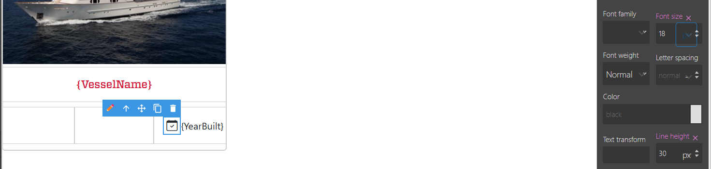 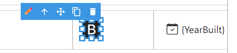 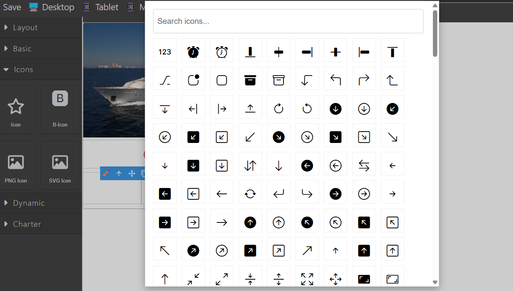For SVG and PNG icons, icon selection option is available in the traits tab on the right panel.
Adding effects on mouse over the card
Select the card from layers and click ‘Traits’ tab in the right panel. ...
Select the 'Hover' state, the make the desired changes.
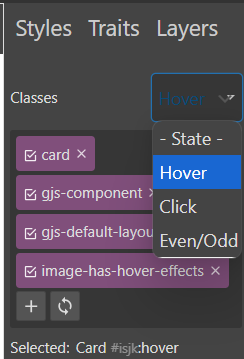Setting box-shadow property for card on hover.
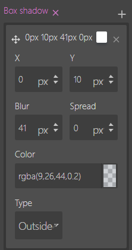Add transition properties for smoother visual effects.
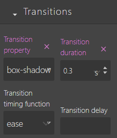Preview (button at the top toolbar with eye icon) the changes with real api data.
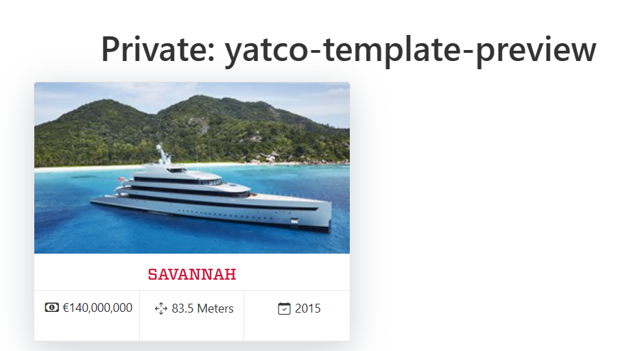There are few default custom fonts available which you can use in the template builder. In addition if you want to use a specific font, then these are the steps to be followed.
Go to https://fonts.google.com/ and pick any font. As an example: https://fonts.google.com/specimen/Raleway
Press the 'Get Font' button as in the screenshot.
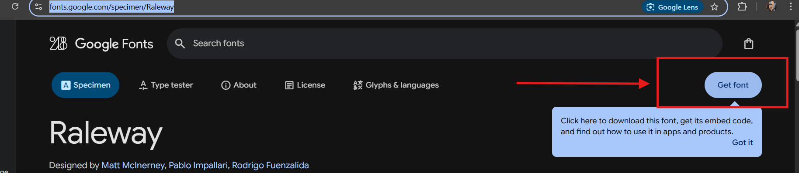
Then click 'Download all' button in the next screen.
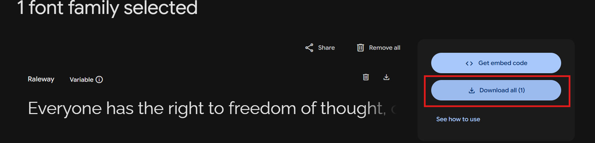
A zip file will be downloaded. Extract the file.
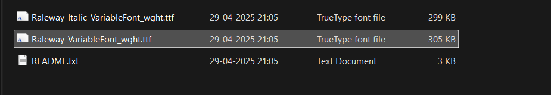
Go to YATCO Font Options(install fonts) and Click 'Add New Font'. Browser the .ttf file in the extracted folder and locate 'Raleway-VariableFont_wght.ttf'.
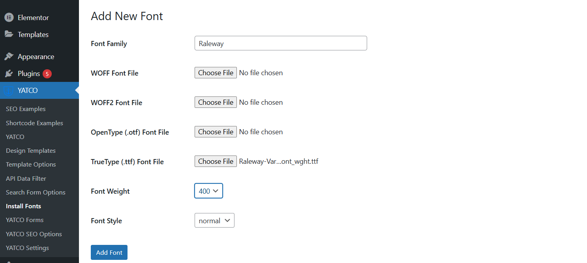
And then click 'Add Font' button.
Now in the template editor, you can see the newly installed font inside the 'font-family' property under 'Typography' in the 'Style' Tab.
Screenshot attached below :
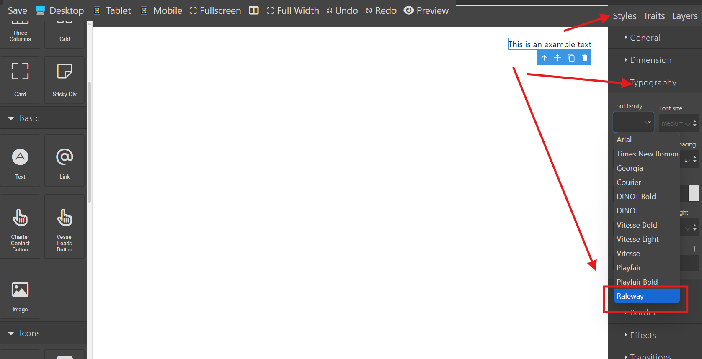
Select the Template options from the plugin menu items
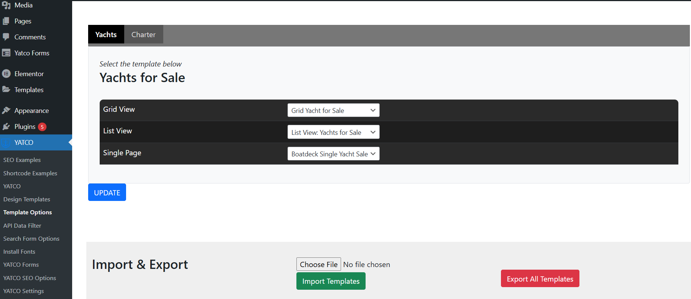There are two Tabs on the top : Sale & Charter
Choose the Grid View, List View and Single Page from the dropdown and click UPDATE button to save the template usage accordingly.
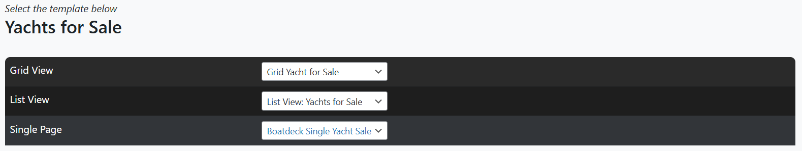Go to Yatco settings page and select the Template Pack as 'Template Builder' from the dropdown and update.
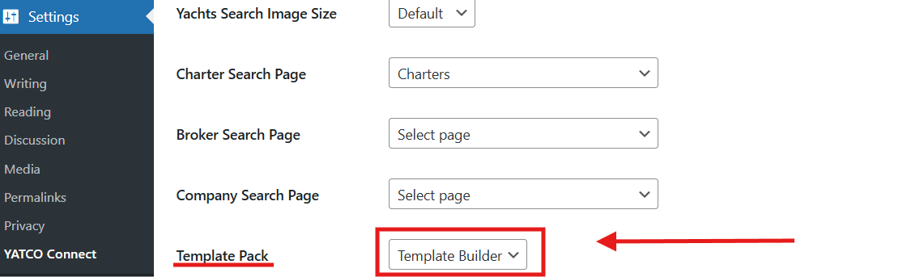